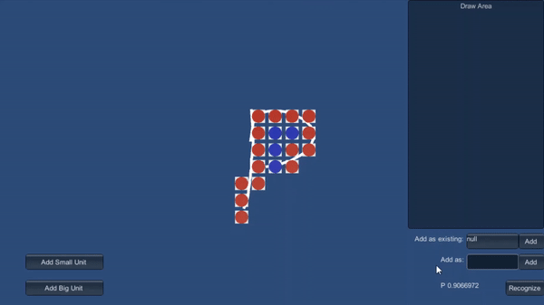

Sketch RTS Formations
Research project about real time changes in sketch based RTS formations
Draw Formations

Add Custom Templates
Make Real Time Changes

Make Real Time Changes
Real-Time Strategy formations
This research project presents real time changes in a custom formation system, to improve formations in existing real time
strategy games.
It allows the user to use simple drawings to create real time strategy game formations in
real time. At the same time, the project also allows for the user to remove units in existing formations, causing the
formation to reform the original formation, but with less units.
The project recognizes user input drawings by the use
of a gesture recognition algorithm, allowing the user to create formation templates and let them be recognized
later. The formations are also improved by the use of a grid, allowing for filling of formation and the removement
of minor unwanted flaws in the drawing.
It also always ensures that the scaling of the formation is as optimal
as possible to the number of units in the formation. In this project you will be able to see that the scaling will always
account for all units, with a marge of 2 units. The real-time changes in the project allow for direct implementation
in to existing real time strategy games, to enhance formation control.
I have made this project over the span of 3 months for my graduation work in my bachelor degree of Game Development.
- How formations are formed in RTS games
- How gesture recognition algorithms work
- How point-clouds work
- How you can generate formations from gestures by using grids
More information can be found in my paper.